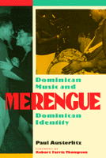

<body bgcolor="#FFFFFF" text="#000000" link="#0000FF" vlink="#CC0000" alink="#CC0000"><center><hr width="350" size="1" align="center" noshade>A fascinating examination of the social history of merengue dance music and its importance as a social and cultural symbol<hr width="350" size="1" align="center" noshade><p><a href="https://cdcshoppingcart.uchicago.edu/Cart/ChicagoBook.aspx?ISBN=9781566394833&&PRESS=temple" target="_top">Buy this book!</a> | <a href="https://cdcshoppingcart.uchicago.edu/Cart/Cart.aspx?PRESS=temple" target="_top">View Cart</a> | <a href="https://cdcshoppingcart.uchicago.edu/Cart/Cart.aspx?PRESS=temple" target="_top">Check Out</a></p><p></p></center><!--none//--><h1>Merengue</h1>
<H2>Dominican Music and Dominican Identity</H2>
<h3>Paul Austerlitz, foreword by Robert Farris Thompson</h3>
<P>cloth 1-56639-483-X $69.95, Dec 96, <FONT COLOR=#990033>Out of Print</FONT>
<br>paper 1-56639-484-8 $35.95, Dec 96, <FONT COLOR=#990033>Available</FONT>
<BR> 224 pp
6x9
</P><BLOCKQUOTE><I>"This book points the way toward that ideal zone of understanding. Austerlitz is a leading scholar of merengue. But he wears his erudition lightly. Through all the exposition he remains a </I>buen elemento<I>, able to pick up a sax and play merengue with hes peers. His informants clearly consider him a colleague and share with him aesthetic judgements and considerations.... The message of merengue, like rap, mambo, samba, and dancehall, ultimately may boil down to this: subvert the threat of a posthominid future with collective honesties of sweat and motion."</I>
<BR>&#151<B>Robert Farris Thompson</B>, from the Foreword<I></I></BLOCKQUOTE>
<P>Merengue&#151the quintessential Dominican dance music&#151has a long and complex history, both on the island and in the large immigrant community in New York City. In this ambitious work, Paul Austerlitz unravels the African and Iberian roots of merengue and traces its growth under dictator Rafael Trujillo and its renewed popularity as an international music.
<P>Using extensive interviews as well as written commentaries, Austerlitz examines the historical and contemporary contexts in which merengue is performed and danced, its symbolic significance, its social functions, and its musical and choreographic structures. He tells the tale of merengue's political functions, and of its class and racial significance. He not only explores the various ethnic origins of this Ibero-African art form, but points out how some Dominicans have tried to deny its African roots.
<P>In today's global society, mass culture often marks ethnic identity. Found throughout Dominican society, both at home and abroad, merengue is the prime marker of Dominican identity. By telling the story of this dance music, the author captures the meaning of mass and folk expression in contemporary ethnicity as well as the relationship between regional, national, and migrant culture and between rural/regional and urban/mass culture. Austerlitz also traces the impact of migration and global culture on the native music, itself already a vibrant intermixture of home-grown merengue forms.
<P>From rural folk idiom to transnational mass music, merengue has had a long and colorful career. Its well-deserved popularity will make this book a must read for anyone interested in contemporary music; its complex history will make the book equally indispensable to anyone interested in cultural studies.
<BR>&nbsp;<h2>Excerpt</h2><P>Excerpt available at <a href="http://www.temple.edu/tempress">www.temple.edu/tempress</a></p>
<BR>&nbsp;<h2>Reviews</h2>
<p><I>"In a well written and organized narrative that avoids academic jargon, the book invites all kinds of readers to the world of 'euphoric sounds' that initially drew the author to this music....One of the most significant contributions of this study lies in its analysis of merengues's stylistic continuities and transformations. A jazz and merengue saxophonist himself since the 1980s, Austerlitz demonstrates a profound knowledge of how merengue 'works' musically, and a sharp ear in identifying significant stylistic characteristics and changes. His familiarity with the medium also gives him access to perceptions and value judgments of other musicians thereby enriching his analysis....The reader will be delighted with the sounds of all these voices integrated into a coherent historical account. Austerlitz also has an experienced voice. He has a riff that we want to go on hearing."</I>
<br>&#151<b>Mareia Quintero Rivera</b>, <I>The World of Music</I>
<p><i>"Austerlitz presents an engrossing ethnography of Dominican music, mostly based on the testimony of well-known bandleaders, composers, arrangers, singers, and performers."</i>
<br>&#151<b><i>Latin American Music Review</i></b>
<BR>&nbsp;<h2>Contents</h2><P>
<p>Foreword &#150 Robert Farris Thompson
<br>Preface
<br>1. Introduction
<p><b>Part I: The History of Merengue, 1854-1961</b>
<br>2. Nineteenth-Century Caribbean Merengue
<br>3. Merengue Cibaeño, Cultural Nationalism, and Resistance
<br>4. Music and the State: Merengue during the Era of Trujillo, 1930-1961
<br><b>Part II: The Contemporary Era, 1961-1995</b>
<br>5. Merengue in the Transnational community
<br>6. Innovation and Social Issues in Pop Merengue
<br>7. Merengue on the Global Stage
<br>8. Enduring Localism
<br>Conclusion
<p>Notes
<br>Bibliography
<br>Interviews
<br>Index
</P><BR>&nbsp;<H2>About the Author(s)</H2>
<P><B>Paul Austerlitz</B> is Assistant Professor of Ethnomusicology at the University of Miami.</P>
<BR><H2>Subject Categories</H2>
<p><A HREF="/tempress/latin.html" TARGET="_top">Latin American/Caribbean Studies</a>
<BR><A HREF="/tempress/sociology.html" TARGET="_top">Sociology</a>
<BR><A HREF="/tempress/music.html" TARGET="_top">Music and Dance</a>
</p>
<p align="center"><a href="https://cdcshoppingcart.uchicago.edu/Cart/ChicagoBook.aspx?ISBN=9781566394833&&PRESS=temple" target="_top">Buy this book!</a> | <a href="https://cdcshoppingcart.uchicago.edu/Cart/Cart.aspx?PRESS=temple" target="_top">View Cart</a> | <a href="https://cdcshoppingcart.uchicago.edu/Cart/Cart.aspx?PRESS=temple" target="_top">Check Out</a></p><p><font face="Arial" size="1"><a href="copyright.html" onMouseOver="window.status='Web Copyright Policy';return true;" onMouseOut="window.status=''" title="Web Copyright Policy">&copy;</a> 2015 <a href="http://www.temple.edu" target="new" onMouseOver="window.status='Link to Temple University home page';return true;" onMouseOut="window.status=''" title="Link to Temple University home page">Temple University</a>. All Rights Reserved. http://www.temple.edu/tempress/titles/1060_reg.html</font></p>